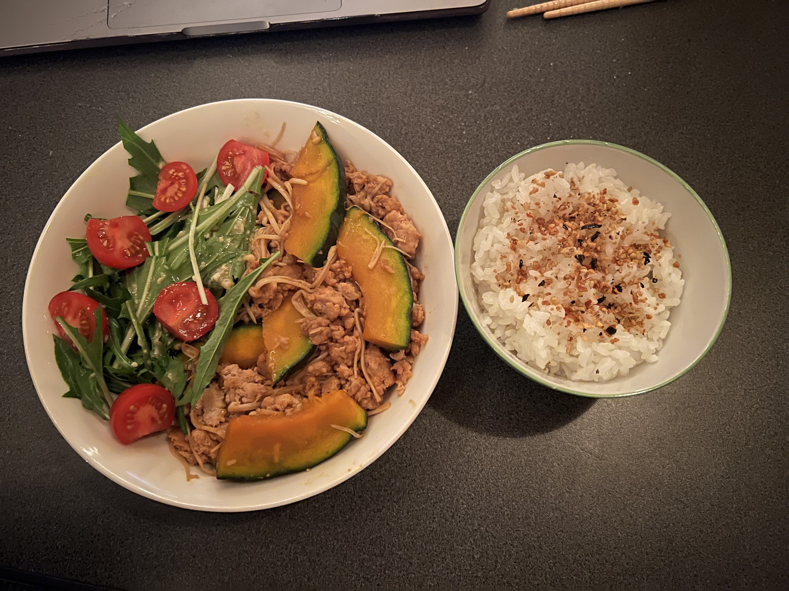

Nikujaga

What is it?
Nikujaga, niku meaning meat and jaga meaning potato respectively, is a hearty Japanese style stew. Savory and
delicious, this dish is a great way to warm up in the winter time.
What You'll Need
- 300g Potato
- 200g Sliced Beef
- 200g Onion
- 150g Carrots
- 100g Sugar Snap Peas
- 100g Shirataki Noodles
- 480ml Dashi
- 60ml Mirin
- 60ml Soy Sauce
- 30ml Sake
- 1 Tablespoon Sugar
Instructions
- Slice your vegetables, and rinse and drain your shirataki
- Heat up neutral oil in a pan and add onions Stir fry until slightly browned, about three minutes.
- Add sliced beef to the onion mixutre, stir frying until no longer pink
- Add kabocha and stir fry with pork mixture for about a minute
- Cover everything with a lid, and let it simmer on a low heat for 10 minutes
- After 10 minutes, add the sauce. Increase the heat, and fry for 2-3 more minutes
- Serve with a side of rice and enjoy!